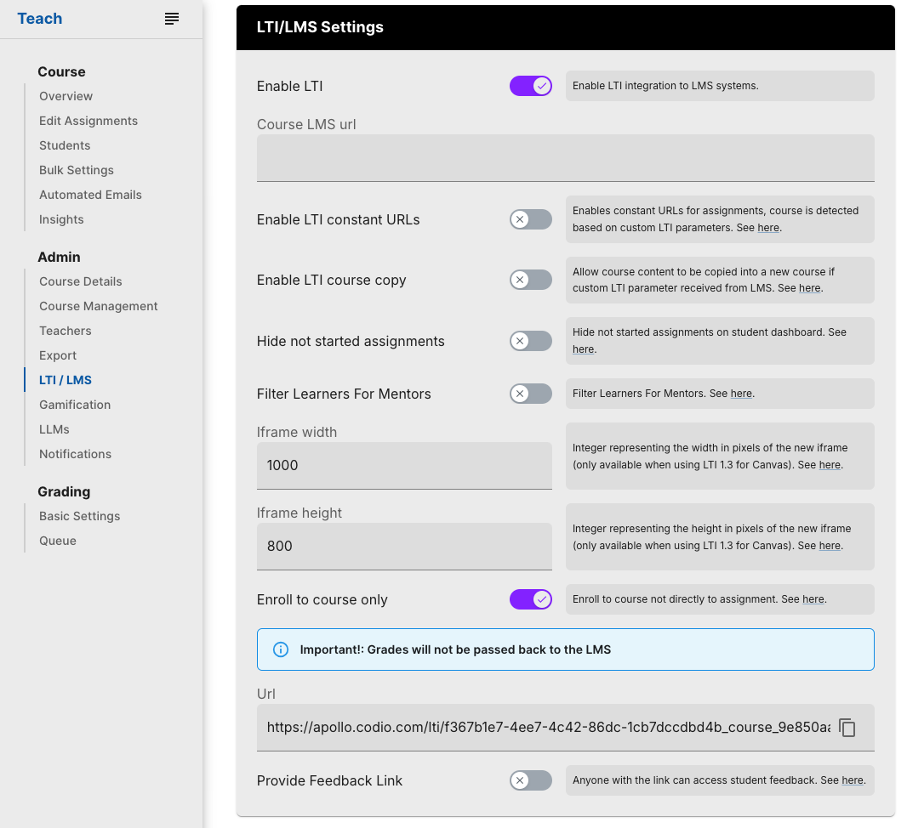

LTI Enroll to Course Only¶
LTI Enrollment provides single sign-on access to an entire course without linking each assignment. It does not allow for automatic grade passback.
To use this feature, first generate a link from your Codio course and then add it to your LMS course as an External Tool in an assignment or module. When students click the link, they are enrolled in the Codio course and redirected to the Codio dashboard. On their dashboards they will see all the assignments for the course. Students do not need to begin each assignment using the LMS system.
To generate an LTI Enroll Link, follow the steps below:
{kind=link}

Navigate to the Courses page and select the course you wish to connect.
Click the LTI/LMS tab and toggle the Enable LTI setting on in the LTI/LMS Settings area.
Enable the Enroll to course only setting to generate the link.
Copy the link and paste it as an External Tool in your LMS system.
Note
With the Enroll to course only setting, grades are not passed back to the LMS. Refer to Webhook for more information about passing grades back.